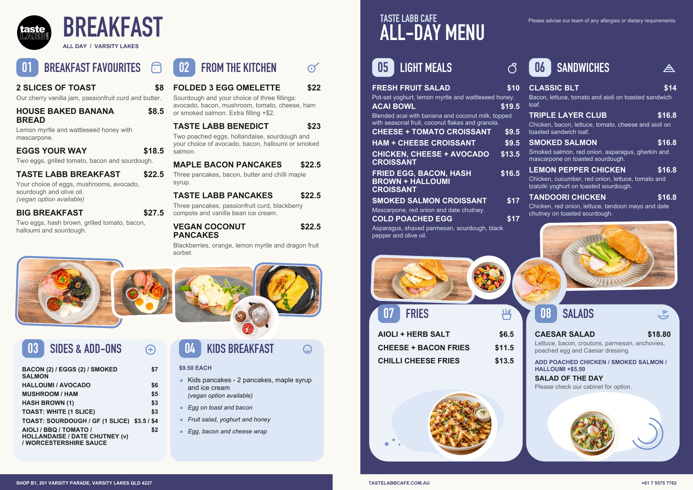

<!doctype html><html lang="en"><meta charset="utf-8"><meta name="viewport" content="width=device-width,initial-scale=1"><title>TasteLABB | Menu Version 3</title><style>*{box-sizing:border-box}body{margin:0;background:#fbf9f3;color:#413f70;font-family:Arial,sans-serif}main{max-width:1100px;margin:auto;padding:24px 16px}header{display:flex;align-items:center;justify-content:space-between;gap:20px;margin-bottom:18px}h1{font-size:clamp(24px,4vw,36px);margin:5px 0}p{margin:5px 0;font-size:14px}.eyebrow{letter-spacing:2px;font-weight:bold;font-size:11px}nav{display:flex;gap:8px;flex-wrap:wrap}a,button{border:1px solid #413f70;border-radius:6px;padding:11px 14px;font:inherit;font-size:13px;cursor:pointer;text-decoration:none;color:#413f70;background:transparent}a.primary{color:white;background:#413f70}.menu{display:block;width:100%;height:auto;border-radius:8px;box-shadow:0 8px 30px #413f7018}footer{font-size:12px;margin-top:16px;color:#646375}@media(max-width:650px){header{display:block}nav{margin-top:16px}}</style><main><header><div><p class="eyebrow">TASTELABB CAFE</p><h1>All-day menu · Version 3</h1><p>Updated 1 November 2026 · A3 landscape</p></div><nav><a href="menu-v3.png" target="_blank">Enlarge menu</a><a class="primary" href="menu-v3.pdf" target="_blank">View PDF</a><a href="menu-v3.pdf" download>Download PDF</a></nav></header><a href="menu-v3.png" target="_blank" style="display:block;padding:0;border:0"></a><footer>Draft for review · Tap the menu to enlarge.</footer></main></html>